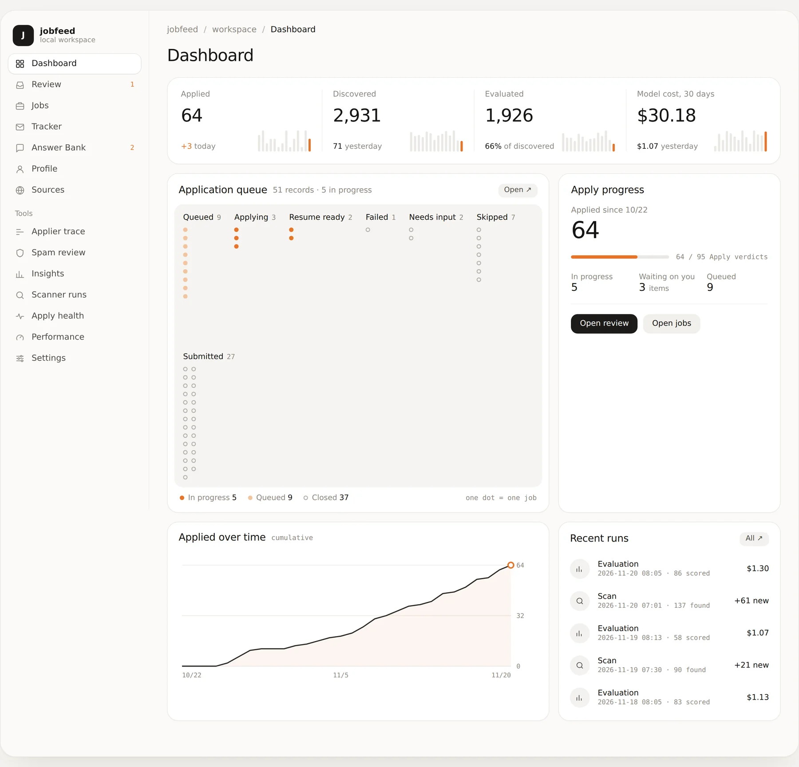
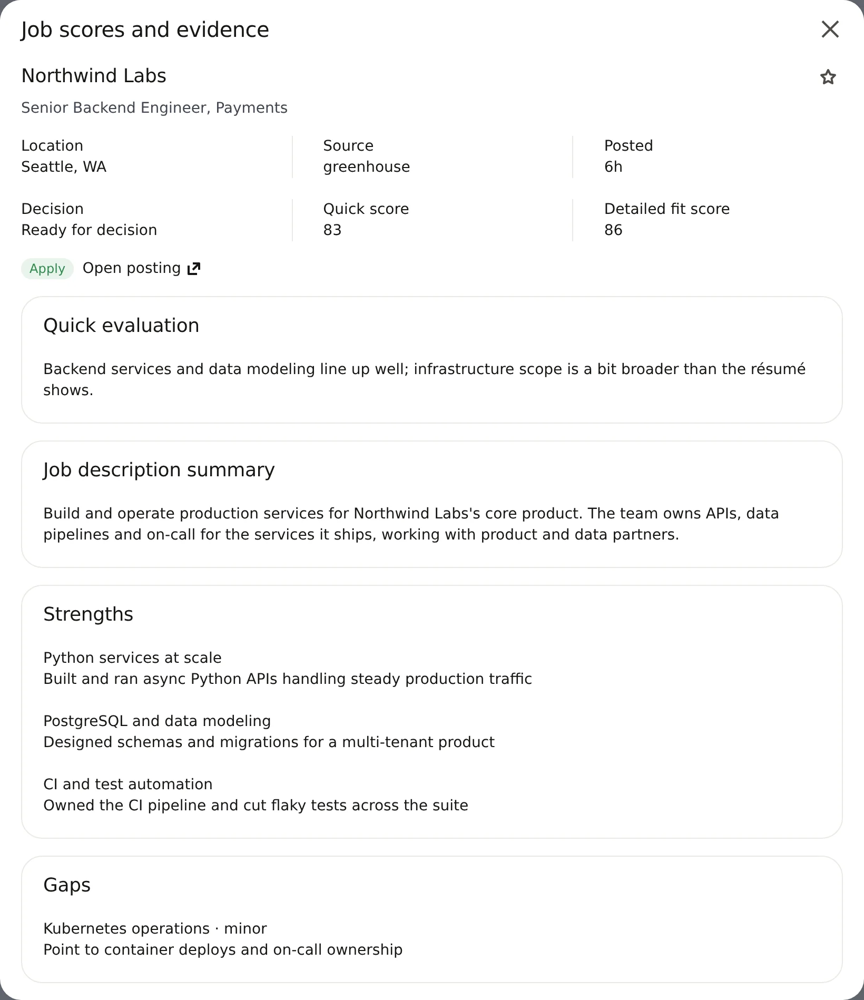
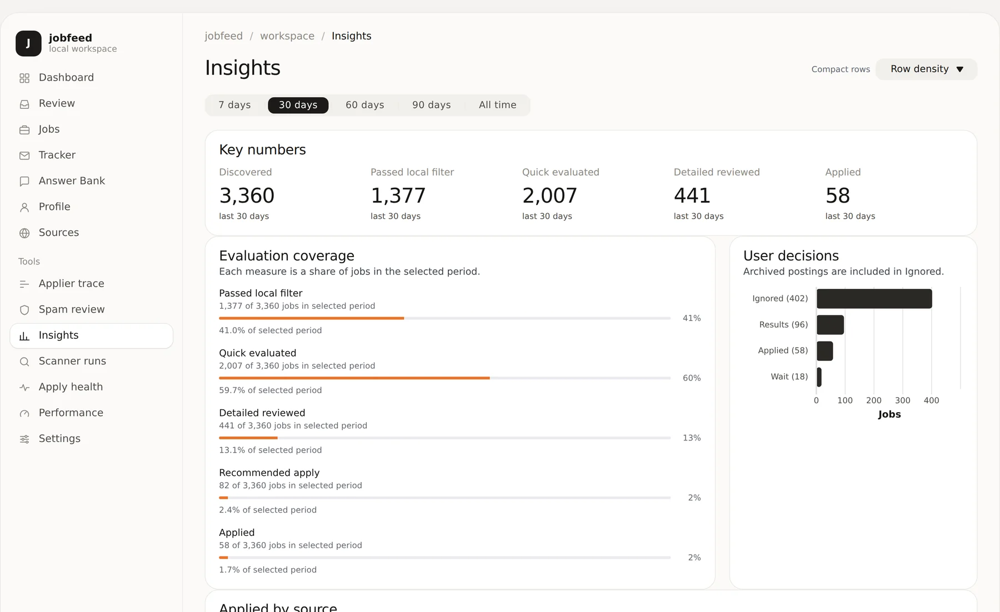

Find the right jobs. Let Claude apply. You press Submit.
Jobfeed scans company career pages and job sites, scores every posting against your résumé, and hands the good ones to a Claude Applier that fills the form in a real browser — then waits for you.
git clone https://github.com/V1ctor2182/jobfeed.git && cd jobfeed && ./setup.sh
macOS or Linux · opens a guided setup at 127.0.0.1:7654 · nothing scans until you start it

The dashboard, shown with synthetic data.
Scans where the jobs are
scan → filter → evaluate → apply → track
One loop, from a blank search to a submitted application.
Two parts that run side by side on your machine: Jobfeed finds and ranks the work, the Applier pipeline does the typing.
Scan
Company career boards, job sites and curated lists, on demand or on a daily timer.
Filter
Local rules drop duplicates, spam and roles you'd never take before any model sees them.
Evaluate
An LLM gives each job a quick score, then a detailed fit review against your résumé.
Apply
One Claude Code Applier per job, in a real Chromium, using one of your own PDF résumés.
Track
Every application, answer, run and dollar of model cost lands back in the dashboard.
Evaluate
Scores you can argue with.
A number alone tells you nothing. Every evaluated job comes with the reasoning behind it, so you decide in seconds — and can see when the model is wrong.
- Quick score, then a detailed fitA cheap first pass ranks everything; only the promising jobs get the full review.
- Strengths and gaps, with evidenceWhat in your résumé matches the posting, what's missing, and how much it matters.
- A clear verdictApply, consider or skip — and the dashboard shows what every evaluation run cost.

Apply
An Applier that asks instead of guessing.
Each Applier is a Claude Code agent with its own browser. It fills the form the way you would, and when it needs a fact it doesn't have, it asks you on Discord.
- Your résumés, untouchedIt picks the best fit from the PDFs you approved. It never rewrites them.
- An answer bank that learnsEach answer you give is saved and reused, so you answer “sponsorship?” once, not fifty times.
- A trace of every stepApplier trace shows each model call, browser action and wait, so a failed run is never a mystery.
Filled 14 of 15 fields with backend-2026.pdf. One question the profile doesn't answer:
No. Save that for next time.
Saved to the answer bank. Review summary ready:
Reply submit to send it.
submit
You stay in control
Automation up to the line. The line is yours.
Jobfeed is built so the agent can do nearly everything — except the one click that matters, unless you say otherwise.
Submit waits for you
By default, nothing is sent until you press Submit on the dashboard or reply submit in the job's Discord thread.
Autopilot is opt-in
Auto submit and autopilot stay off until you turn them on. CAPTCHAs, open questions and warnings still wait for you.
Setup starts nothing
Installing, running tests and opening the dashboard never start a worker, a browser session or an application.
Your data stays home
Résumés, profile, answers, credentials and databases live on your machine and are ignored by Git.
Track
See the whole funnel, not just a spreadsheet.
How many jobs you found, how many passed, what the model recommended and what you applied to — over any window you choose.

Install
Running in one command. Or ask your agent.
Start on your laptop to find and score jobs. Move to an always-on box when you want the daily loop.
Find and score jobs
Installs the runtime, starts Jobfeed at 127.0.0.1:7654 and walks you through connecting a model, uploading your résumé and picking searches.
$ git clone https://github.com/V1ctor2182/jobfeed.git $ cd jobfeed $ ./setup.sh
Hand it to Claude Code or Codex
Paste this into an agent that can run commands on your VPS or Mac mini. It installs the service, sets things up with you in chat and tests it all before handing over.
Set up Jobfeed on my server as a background service. Read https://raw.githubusercontent.com/V1ctor2182/jobfeed/main/docs/server-install.md and follow it exactly, including how it says to talk to me: short, structured messages and numbered choices. If you aren't running on my server, ask me how to reach it. Ask me before using sudo, don't start any scan, and test everything before you hand over.
Adding the Applier?Three more things on the same machine.
Spend your time on interviews, not forms.
Jobfeed is free and open source under the MIT License.